Bringing History and Archaeology to Life Through Experiential Learning
About Exploristory
At Exploristory Educations, we believe that history and
archaeology cannot be truly understood within classroom walls. The
past comes alive when students step into heritage sites, touch
ancient artifacts, and decode the stories written in stone and
soil.
We are a team of passionate archaeologists and historians
dedicated to transforming how children connect with India's rich
cultural heritage.
Our Mission
To create immersive, hands-on learning experiences that help
school children decode the past, understand their cultural roots,
and develop a lifelong connection with heritage and history.
Why Choose Exploristory?
Expert Led
Conducted by archaeologists and historians with deep expertise in
Indian heritage.
Curriculum Aligned
Our programs align with NEP guidelines and enhance classroom
learning outcomes.
Immersive Experience
Beyond textbooks — hands-on activities, site visits, and
interactive learning.
Our Services
Our Existing Plans
One-Day Trips
Curated heritage site visits that bring history to life in a
single immersive day. Perfect for schools seeking quick yet
impactful learning experiences.
Multi-Day Expeditions
Extended heritage journeys that allow deeper exploration, site
interactions, and comprehensive heritage understanding across
multiple locations.
In-House Workshops
Bring history into your classroom with hands-on sessions, artifact
simulations, and interactive learning activities designed for all
grade levels.
Other Services We Can Provide
Facilitator Support
We partner with schools to enhance and facilitate their
self-curated trips, providing expert guidance and educational
content support.
Heritage Expo Planning
Comprehensive planning and execution of heritage exhibitions and
cultural showcases for schools and institutions.
Custom Programs
Tailored experiential learning experiences designed specifically
for your school's unique needs and curriculum requirements.
Our Operating Cities
Chennai
Explore the magnificent temple architecture of South India, from
Mahabalipuram's Shore Temple to the intricate carvings of local
sites. Our Chennai programs focus on Early Historic Tamil Heritage,
coastal archaeology, and Epigraphy.
Popular Programs:
Mahabalipuram Heritage Trail, Kanchipuram Temple Architecture Walk,
Gingee Maratha History Expedition etc.
Bangalore
Discover the rich history of the Karnataka through ancient forts,
temples, musuems and archaeological sites surrounding Bangalore.
Programs focus on medieval history, fort architecture, and local
epigraphical heritage.
Popular Programs:
Ancient/Medieval/Colonial Bangalore Exploration, Mythic Society
Epigraphical workshop, Devanahalli fort exploration etc.
Indore
Uncover the Malwa plateau's historical significance through visits
to ancient temples, forts, and archaeological sites. Rich in both
Maratha and ancient heritage.
Popular Programs:
Maheshwar Heritage Expedition, Ujjain heritage Trail, Rock cut
wonders in Bagh and Mandsaur Expeditions etc.
Ujjain
One of India's most historically significant cities. Explore the
ancient capital of the Malwa region, famous temples, and its role in
Indian astronomy and trade routes.
Popular Programs:
Ancient Ujjain Discovery, Temple architecture in Malwa at Ram
Janardhan Temple, Historical Art and Aesthetics at Triveni Museum,
Dhar and Mandsaur visits etc.
Nagpur
Discover the rich Buddhist heritage, ancient trade routes, and local
temple architecture. Nagpur offers unique insights into central
Indian history.
Popular Programs:
Central Indian Heritage Trail at Nagardhan, Ramtek and Mansar
Archaeological Expedition, Nagpur Archaeology Walk etc.
Khandwa
Explore the historical significance of Malwa region near the city,
known for its temples, forts, and archaeological sites representing
various historical periods.
Popular Programs:
Maheshwar History Trail, Burhanpur Heritage Expedition, etc
Surat
Discover the maritime heritage and mercantile history of this
important port city. Explore colonial architecture, ancient trade
heritage, and coastal archaeology.
Popular Programs:
Maritime Heritage Tour, Colonial Architecture Walk, Museum vists
✦ We're Expanding ✦
Open to curating experiences in your city! Reach out to us to
discuss custom heritage programs tailored to your city and school's
needs.
Overview: One-day expedition at
Mahabalipuram, exploring and understanding the Pallava
heritage along with learning the development of Dravidian
Temple Architecture.
Highlights: Monument exploration, hands-on
activities like treasure hunt and picture bingo.
"Our visit to Mahabalipuram was a structured and informative
experience. The guides from Exploristory provided clear,
factual explanations without unnecessary dramatization."
— S. Titus Nathaniel, Student IX F, C.S.I. Bain School ICSE
Overview: One-day expedition at
Mahabalipuram, exploring and understanding the Pallava
heritage along with learning the development of Dravidian
Temple Architecture.
Highlights: Monument exploration, hands-on
activities like treasure hunt and picture bingo.
"Our visit to Mahabalipuram was a structured and informative
experience. The guides from Exploristory provided clear,
factual explanations without unnecessary dramatization."
— S. Titus Nathaniel, Student IX F, C.S.I. Bain School ICSE
Overview: One-day expedition at
Mahabalipuram, exploring and understanding the Pallava
heritage along with learning the development of Dravidian
Temple Architecture.
Highlights: Monument exploration, hands-on
activities like treasure hunt and picture bingo.
"Our visit to Mahabalipuram was a structured and informative
experience. The guides from Exploristory provided clear,
factual explanations without unnecessary dramatization."
— S. Titus Nathaniel, Student IX F, C.S.I. Bain School ICSE
Photo Gallery
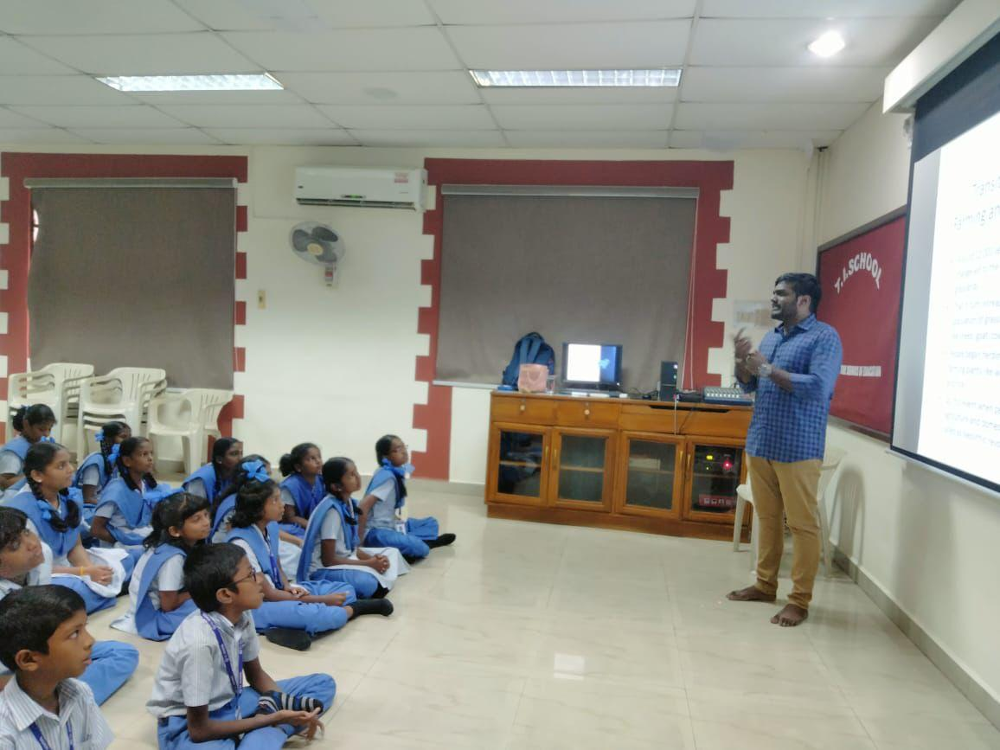
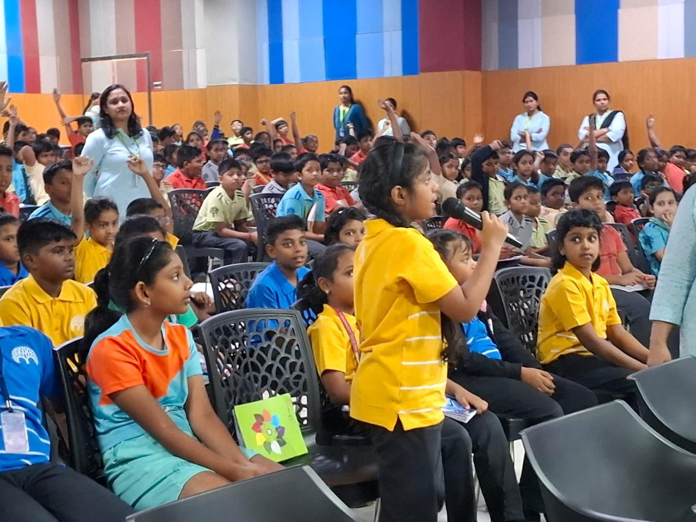
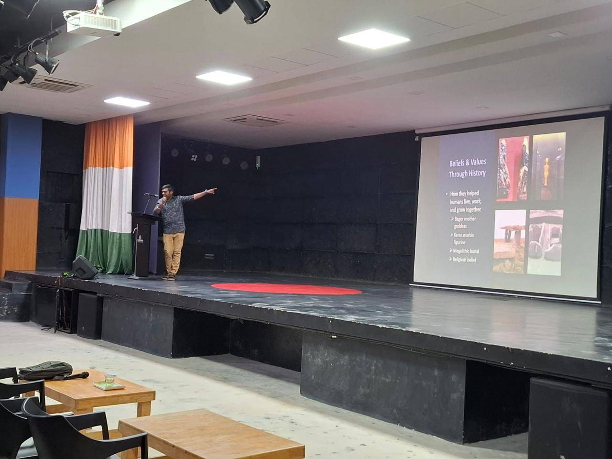
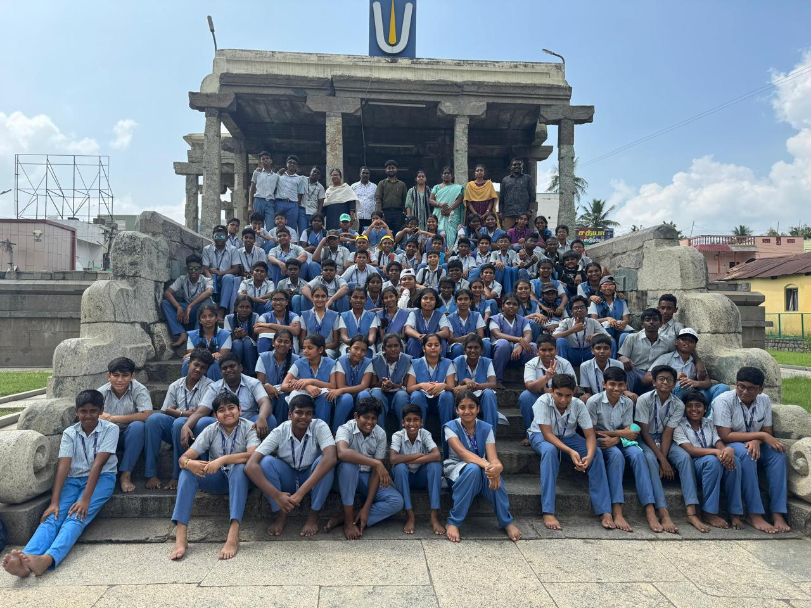
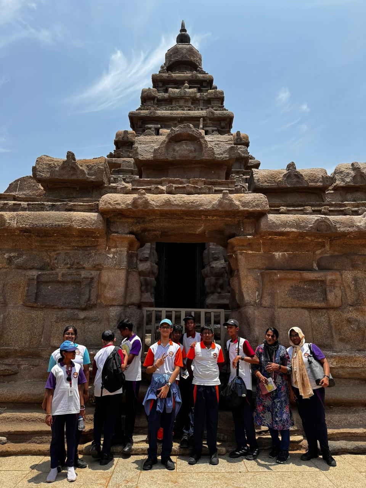
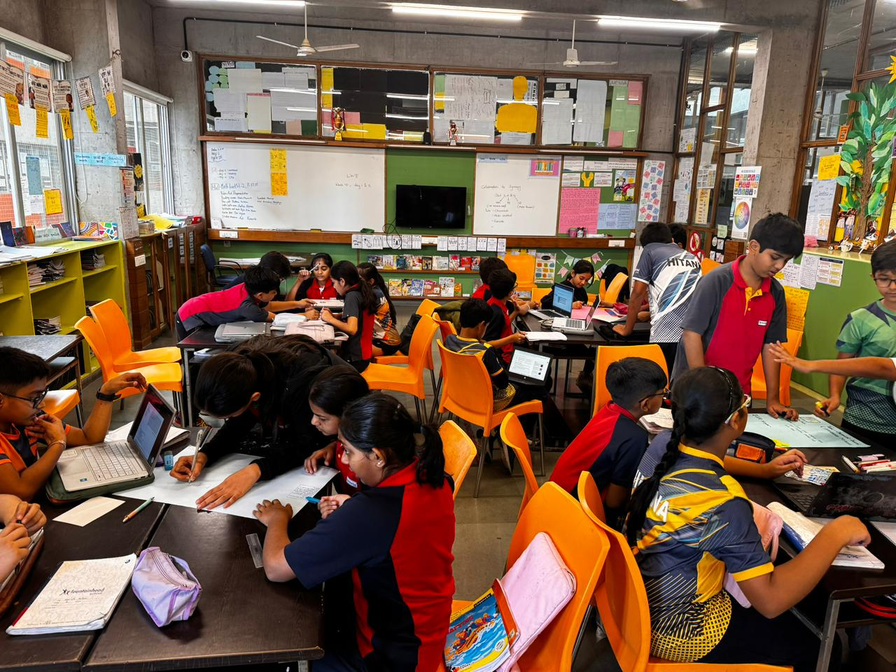
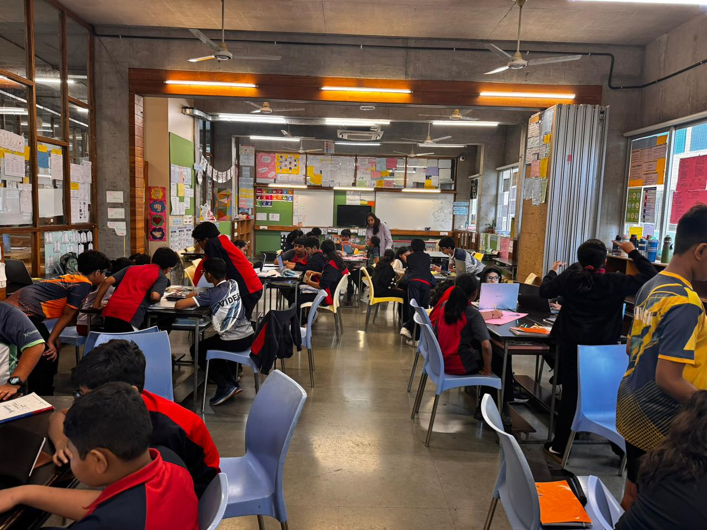
Meet Our Team & Mentors
Founders
Manya Jain
Co-Founder & Executive Director
Passionate archaeologist with a vision to make history
engaging for younger generations.
Read Bio →
Passionate archaeologist with a vision to make history and the
past more enagaging for the younger generations. Manya designs
all our curriculum programs and leads experiential learning
initiatives.
← Back
Rampalaniappan PL
Co-Founder & Executive Director
Expert prehistorian dedicated to bringing heritage education
to schools across India.
Read Bio →
An expert prehistorian, dedicated to bringing heritage
education to schools across India. He is a master of
presenting complex knowlegde and ideas into creative and
interactive sessions while also leading some of our best
expeditions.
← Back
Our Mentors
Dr. AMV Subramaniam
Heritage & Archaeology Mentor
Inspiring mentor driving innovative approaches to heritage
interpretation and public engagement.
Read Bio →
He has been a constant source of inspiration, driving
innovative approaches to heritage interpretation and public
engagement. His technical guidance encourages us to explore
more effective ways to make heritage accessible, meaningful
and engaging for wider audiences, fostering a deeper
appreciation of our cultural legacy.
← Back
Prof. Jinu Koshy
Heritage Learning & Pedagogy Mentor
Excavation expert specializing in Palaeolithic archaeology
and field research across South India.
Read Bio →
Dr. Jinu Koshy is the Excavation In-charge at the Department
of Ancient History and Archaeology, University of Madras. He
has led 15+ excavations across South India and specializes in
Palaeolithic Archaeology, Lithic and Pottery analysis, Rock
Art, and Field Archaeology. He has published over 25 research
papers and currently studies settlement patterns in the Lower
Palar River Basin and Rock Art sites in Kurnool District.
← Back
Our Other Contributors
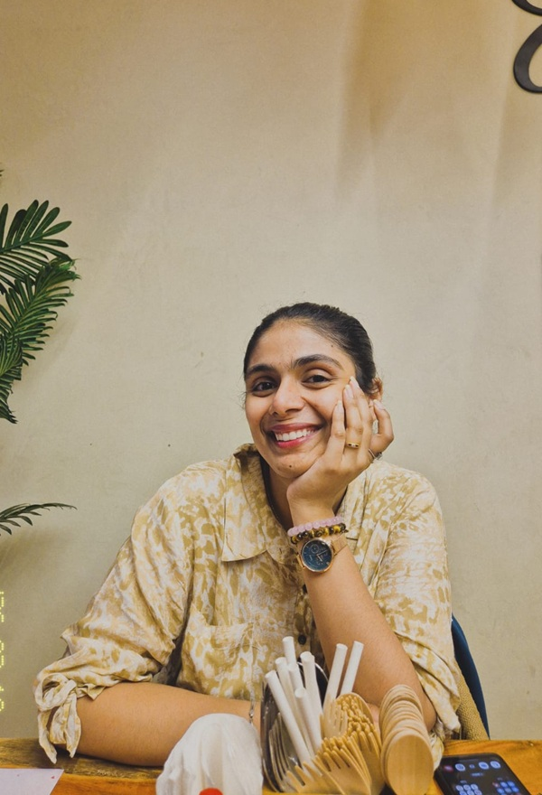
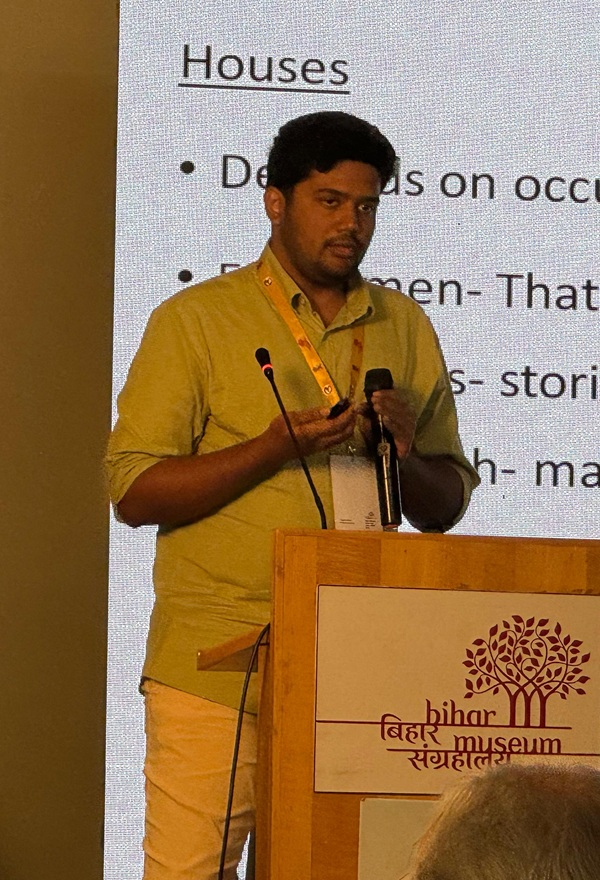
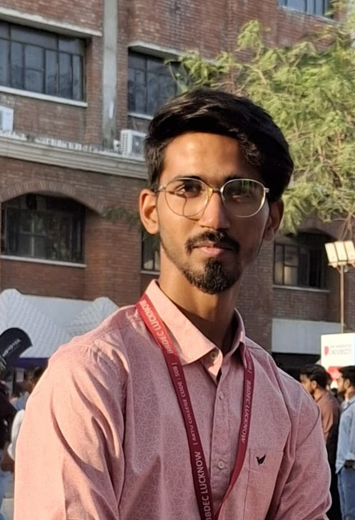
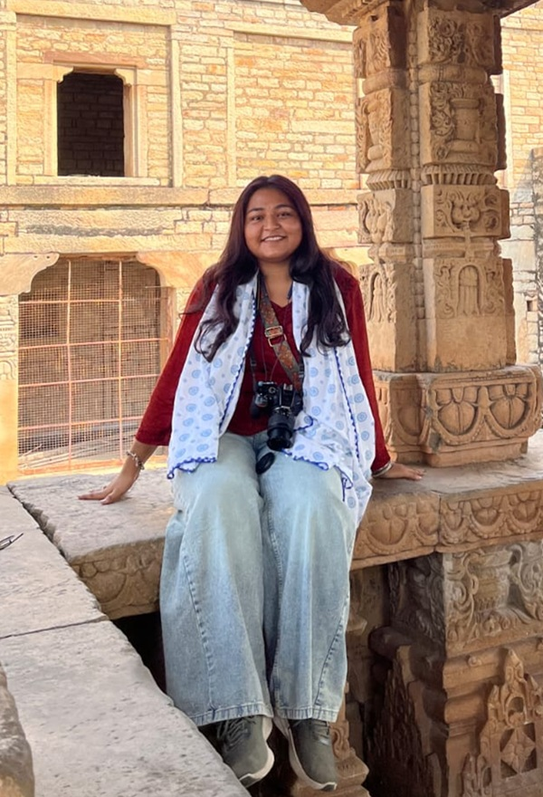
Our Collective Vision
Our team and mentors share a common belief: that experiential
learning transforms how children understand and connect with
history. Together, we're building a movement to revolutionize
heritage education across India.
Get In Touch
Reach Us
Phone: +91 99933 16161, +91 94442 12300
Email: exploristoryeducations@gmail.com
Address:
17/11 - Palaniappa Homes - Jeevanantham Street, Vinayagapuram,
Ambattur, Chennai, Tamil Nadu - 600053 Landmark - Behind Naidu
Hall
×
Multi-Day Heritage Expeditions
Our multi-day expeditions offer immersive learning journeys where
students explore historical landscapes, archaeological sites, and
cultural traditions through guided fieldwork and experiential
activities. These programs connect classroom learning with real-world
heritage exploration.
Featured Expeditions
Ancient Treasures of Madhya Pradesh (5-7 Days) -
Explore Bhimbetka rock shelters, Bhojpur Temple, Sanchi Stupa,
Udayagiri Caves and the Bhopal Tribal Museum while studying
prehistoric art, early temples, and Buddhist heritage.
Dholavira Heritage Expedition (5 Days) - Discover the
Indus Valley Civilisation through visits to the Dholavira
archaeological site and museum, learning about ancient town planning,
trade systems, and Harappan life.
Maharashtra Heritage Expedition (4-6 Days) - Study
Maratha history through visits to Sinhagad, Pratapgad, Suvarnadurg and
Raigad forts while exploring warfare strategies and leadership under
Shivaji Maharaj.
Keeladi Archaeological Expedition (2-3 Days) -
Experience early Tamil civilisation at the Keeladi excavation site and
museum through artefact observation and archaeological interpretation.
Karnataka Temple Heritage Journey (4-5 Days) - Visit
Badami, Aihole and Pattadakal to understand the evolution of Indian
temple architecture and stone-carving traditions.
Amritsar: Freedom & Partition Expedition (4-5 Days) -
Explore the Partition Museum, Jallianwala Bagh, Wagah Border and
Golden Temple to understand India's independence movement and the
impact of Partition.
Udaipur & Mewar Heritage Expedition (4-5 Days) -
Discover Rajput heritage through visits to Udaipur City Palace,
Kumbalgarh Fort, Chittorgarh Fort and Dilwara Jain Temples.
Jaipur: The Pink City Legacy (4 Days) - Study
Jaipur's planned city design through visits to Amer Fort, Jaigarh
Fort, City Palace, Jantar Mantar and the Walled City.
Learning Highlights
Hands-on archaeological and heritage exploration.
Role-playing historical scenarios and storytelling sessions.
Architectural observation and cultural interpretation.
Creative activities such as sketching, documentation and site
analysis.
Approximate Program Cost
₹12,500 - ₹30,000 per student depending on destination and duration.
Programs include accommodation, meals, travel within the destination,
subject experts, and specially curated student workbooks. Expeditions
can be customized according to the school's curriculum and requirements.
In-House Heritage Workshops
Our in-house workshops bring archaeology and heritage directly into the
classroom through engaging hands-on activities. Students learn how
historians and archaeologists study the past while developing critical
thinking, creativity, and teamwork skills.
Workshop Activities
Rock Art Simulation - Students create natural
pigments from plant materials and paint prehistoric-style rock art.
Mock Excavation - A simulated archaeological dig
where students excavate artifacts and learn excavation techniques.
Source Story Session - Students analyze historical
images, texts, and artifacts to reconstruct past events.
Pottery Making - Hands-on activity where students
create pottery vessels using traditional techniques.
Pottery Decoration & Reconstruction - Students
decorate pottery and later reconstruct broken fragments like
archaeologists.
Inscription Decipherment - Learn ancient scripts such
as Brahmi and decode historical inscriptions.
Forensic Archaeology - Study skeletal remains to
understand age, health, and life of past populations.
Garbage Archaeology - Students analyze modern waste
to understand lifestyle patterns using archaeological methods.
Program Highlights
Hands-on archaeological learning experiences.
Activities designed for primary, middle and high school students.
Sessions conducted by trained heritage facilitators.
Programs adaptable for classrooms or school grounds.
Approximate Cost
₹150 - ₹250 per student depending on workshop type.
Workshops can be customised based on grade level, school requirements,
and available space.
Facilitator Support
Schools planning their own heritage visits can partner with Exploristory
for expert facilitation and academic guidance during the trip. Our
specialists help transform a regular visit into a structured learning
experience for students.
What We Provide
Expert heritage facilitators during site visits
Educational interpretation of monuments and archaeological sites
Student engagement activities and discussions
Historical context and storytelling for better understanding
Program Benefits
Enhances educational value of school-organised trips
Helps students connect historical knowledge with real locations
Encourages active participation and inquiry-based learning
Heritage Expo Planning
Exploristory assists schools in designing and organising engaging
heritage exhibitions and cultural showcases that encourage students to
explore history through creativity and research.
What We Offer
Theme development for heritage exhibitions
Guidance for student research projects
Exhibit design and display planning
Interactive heritage learning modules
Learning Outcomes
Encourages historical research and creativity
Promotes teamwork and presentation skills
Builds deeper appreciation for cultural heritage
Custom Heritage Programs
Every school has different learning goals. Exploristory designs custom
heritage programs tailored to specific academic objectives, student age
groups, and available locations.
Possible Program Options
Customized one-day heritage visits
Special thematic workshops
Local heritage exploration programs
Multi-day educational heritage journeys
Flexible Design
Programs aligned with school curriculum
Adaptable duration and learning activities
Designed for different grade levels
Chennai - One Day Trip
This program introduces students to the architectural, cultural, and
colonial heritage of Tamil Nadu through guided site exploration and
interactive learning activities.
Key Heritage Sites
Mahabalipuram - Shore Temple, Five Rathas, Arjuna's Penance and
Krishna's Butter Ball.
Egmore Government Museum - Chola bronzes, archaeological gallery and
children's museum.
Fort St. George - Fort Museum, St. Mary's Church and early colonial
structures.
Historic Churches of Chennai - Santhome Basilica, Luz Church, Armenian
Church and St. Thomas Church.
Kanchipuram - Kailasanatha Temple and ancient Jain temples.
Gingee Fort - Rajagiri Citadel, Kalyana Mahal and medieval
fortification structures.
Learning Activities
Architecture observation and sketching exercises.
Artifact analysis and museum exploration activities.
Epigraphy and inscription interpretation.
Historical mapping and heritage documentation projects.
Indicative Cost
₹1,100 - ₹1,700 per student depending on the destination.
Includes AC transport, entry fees, meals, facilitators and activity
materials.
Programs can be customised according to school requirements. For
detailed planning and bookings, please contact us through the Contact
section.
Bangalore - One Day Heritage Trail
Explore the historical layers of Bangalore through forts, temples,
colonial buildings, and cultural landmarks that reflect the city's
transformation across centuries. This experiential expedition introduces
students to medieval dynasties, colonial administration, and the
evolution of modern Bangalore through guided heritage exploration.
Key Heritage Sites
Begur Fort - Early medieval site known for the famous
inscription containing the earliest reference to the name “Bengaluru”.
Devanahalli Fort - 16th-century polygonal fort
associated with Hyder Ali and Tipu Sultan.
Bangalore Fort - Originally built by Kempegowda and
later expanded with stone fortifications.
Tipu Sultan's Summer Palace - Indo-Islamic wooden
palace reflecting Mysorean architecture and Tipu Sultan's rule.
Someshwara Temple, Halasuru - Chola-period temple
with Vijayanagara additions showcasing Dravidian architecture.
Mayo Hall & Kempegowda Museum - Colonial civic
building illustrating administrative history.
Learning Activities
Guided heritage walks identifying architectural and defensive
features.
Inscription reading and historical interpretation exercises.
Architecture sketching and sculpture documentation.
Group discussions on city growth, governance, and heritage
conservation.
Interactive tasks such as heritage quizzes, mapping activities, and
model making.
Program Includes
AC transport for school transfers.
Entry fees and expert heritage facilitators.
Packed lunch and refreshments.
Student activity workbook and learning materials.
Indicative Cost
Approximately ₹800 - ₹1500 per student depending on group size and
itinerary.
The program is flexible and customizable depending on the sites selected
by the school. For detailed itineraries and bookings, please contact us
through the Contact section.
Indore - One Day Heritage Trip
Explore the historic town of Maheshwar, known for its magnificent fort,
riverfront temples, and rich craft traditions. This heritage expedition
introduces students to the architectural legacy of the Holkar dynasty
and the cultural life along the Narmada River.
Key Heritage Sites
Maheshwar Fort - A historic riverside fort associated
with Ahilya Bai Holkar and the Holkar dynasty.
Rajwada Palace - The royal residence reflecting the
administrative and cultural life of the period.
Narmada Ghats - Iconic stone ghats along the Narmada
River showcasing temple architecture and river culture.
Rehwa Society - A traditional weaving center where
students learn about Maheshwari handloom textiles.
Learning Activities
Guided heritage walk through the fort complex.
Observation of architectural styles and monument features.
Interaction with traditional weavers and craft demonstrations.
Creative documentation through sketches and photography.
Approximate Cost
₹1300 per student (for groups around 45 students).
The program includes travel, site entry, meals, safety provisions, and
specially curated learning activities. Schools can contact us for
customized itineraries.
Ujjain - One Day Heritage Trip
Explore the cultural and religious heritage of Ujjain through key temple
sites and museum experiences. This trip introduces students to the
spiritual traditions, historical narratives, and architectural elements
that define one of India's most ancient cities.
Key Heritage Sites
Ram Janardhan Mandir - A historic temple reflecting
traditional architecture and religious practices of the region.
Triveni Museum - A curated museum showcasing
sculptures, artifacts, and historical exhibits related to Ujjain's
heritage.
Learning Activities
Guided exploration of temple architecture and symbolism.
Understanding cultural and religious significance of Ujjain.
Observation and interpretation of museum artifacts.
Interactive discussions on history and heritage.
Approximate Cost
₹650 per student (for groups around 100 students).
The program includes transportation, entry tickets, facilitator support,
and an evening snack. Additional meals can be arranged on request.
Schools can contact us for customized plans and inclusions.
Nagpur - One Day Heritage Expedition
This educational expedition explores the ancient heritage of Vidarbha
through the historic Ramtek Fort and the Mansar Archaeological Site.
Students learn about medieval fort architecture, temple traditions, and
archaeological research through guided site exploration and interactive
activities.
Key Sites
Ramtek Fort & Temple Complex - Includes the Ram
Temple, Karpur Baoli, Varaha statue and several medieval temples
around the hill.
Mansar Archaeological Site - An important site
associated with the Vakataka dynasty and early urban settlement
remains.
Learning Activities
Temple architecture and fortification study.
Sketching and documentation of sculptures and inscriptions.
Introduction to archaeological methods such as stratigraphy and
dating.
Artifact interpretation using replica objects.
Group discussions and creative reconstruction of ancient settlements.
Program Includes
AC transport from school to the heritage sites.
Expert archaeologists and facilitators guiding the program.
Entry fees to monuments and archaeological sites.
Packed lunch and refreshments.
Activity material and student workbooks.
Indicative Cost
Approximately ₹1200 per student.
Group discounts available for larger school groups.
Programs can be customized according to the school's academic
requirements. For detailed planning and bookings, please contact us
through the Contact section.
Mumbai - One Day Heritage Expedition
Explore the rich and diverse heritage of Mumbai through ancient cave
complexes, medieval forts, colonial architecture, and world-class
museums. This experiential learning program allows students to
investigate history through observation, teamwork, and interactive
heritage activities.
Key Heritage Sites
Elephanta Caves - UNESCO heritage site known for its
rock-cut sculptures and depictions of Hindu mythology.
Kanheri Caves - Ancient Buddhist monastic complex
showcasing rock-cut architecture and water management systems.
Vasai & Worli Forts - Coastal forts highlighting
military planning and maritime defense.
Colonial Fort Area - Historic district with Gothic
and colonial-era civic buildings.
CSMVS & Dr. Bhau Daji Lad Museum - Museums preserving
artifacts and cultural history of the region.
Learning Activities
Heritage treasure hunts and archaeological exploration challenges.
Decoding sculptures, symbols, and religious iconography.
Architecture observation and mapping activities.
Group discussions on heritage conservation and urban evolution.
Museum artifact identification and interpretation exercises.
Program Includes
AC transport for school transfers.
Entry fees and expert heritage facilitators.
Packed lunch and refreshments.
Student activity workbook and learning materials.
Indicative Cost
Approximately ₹800 - ₹1500 per student depending on group size and
itinerary.
Programs can be customized depending on the sites selected by the
school. For detailed itineraries and bookings, please contact us through
the Contact section.
Khandwa - One Day Heritage Expeditions
Students explore the rich cultural and historical landscapes surrounding
Khandwa through guided heritage visits, storytelling, and interactive
learning activities designed to make history engaging and memorable.
Maheshwar Heritage Trail
Maheshwar Fort Complex - Explore the historic fort
associated with Ahilya Bai Holkar.
Rajwada Palace - Discover royal life and architecture
of the Holkar period.
Narmada Ghats - Study riverfront temple architecture
and cultural life along the Narmada.
Rehwa Society - Experience traditional Maheshwari
handloom weaving and crafts.
Burhanpur Heritage Exploration
Shahi Qila - Mughal royal fort and palace complex.
Royal Hammam - Historic bathhouse associated with
Mumtaz Mahal.
Ahukhana - Site connected to the original plan of the
Taj Mahal.
Jama Masjid - A major Mughal-era mosque showcasing
Islamic architecture.
Khooni Bhandara - A remarkable 400-year-old
underground water management system.
Learning Activities
Heritage walks and architectural observation.
Interactive role-playing of historical characters.
Creative sketching and monument documentation.
Treasure hunts and heritage discovery games.
Storytelling and reflection sessions.
Approximate Cost
₹1300 per student (for a group of ~45 students).
₹800 per student if the school provides its own bus.
The program includes travel, site entry, meals, safety provisions, and
curated heritage learning activities. Schools can contact us for
customized itineraries and bookings.
Surat - One Day Heritage Trail
Explore the historical and cultural heritage of Surat through monuments,
archaeological sites, and places connected to the city's rich trading
and cultural past. This experiential expedition helps students
understand how Surat developed as an important port city and cultural
center.
Key Heritage Sites
Surat Fort - Historic fort built to defend the city
during its period as a major trading port.
Kadia Dungar - A 1st-2nd century CE rock-cut Buddhist
monument offering insight into early religious architecture.
Dutch, English & Armenian Cemeteries - Heritage sites
reflecting the presence of European traders in Surat.
Udvada - Important center of Parsi culture and
heritage.
Dabhoi - Historic fortified town known for its
medieval gateways and architecture.
Learning Activities
Guided heritage walks and site interpretation.
Observation and documentation of architectural features.
Group discussions on trade, culture, and historical exchange.
Programs can be customized depending on the sites selected by the
school. For detailed itineraries and bookings, please contact us through
the Contact section.